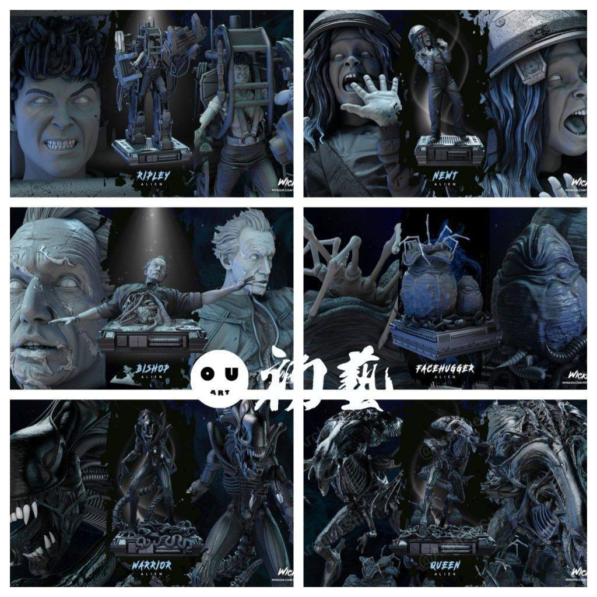
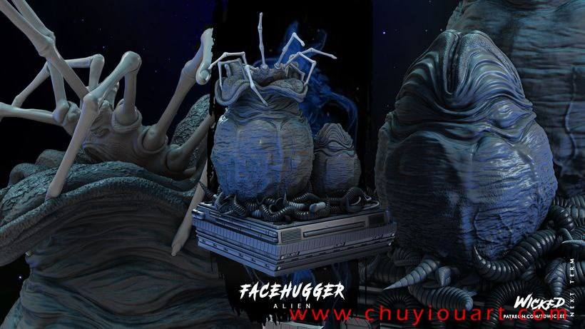
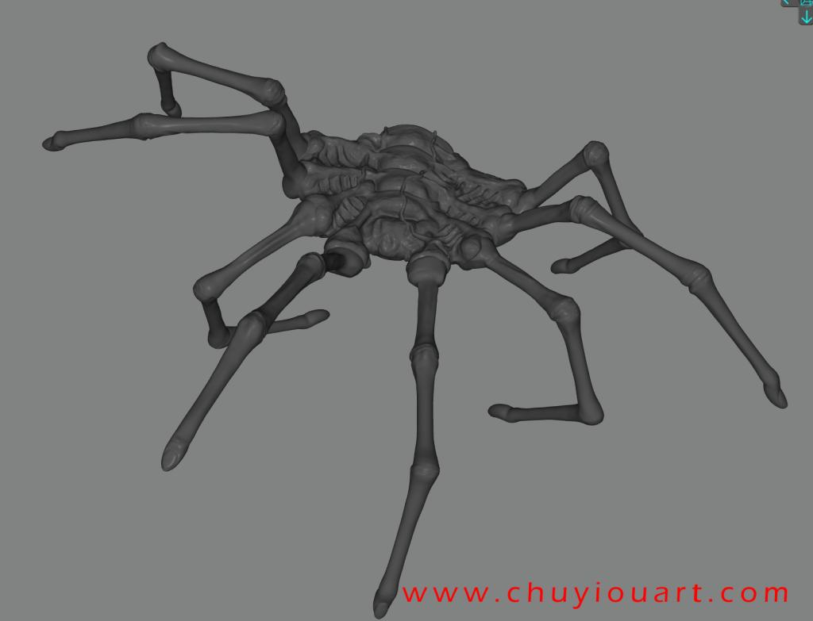
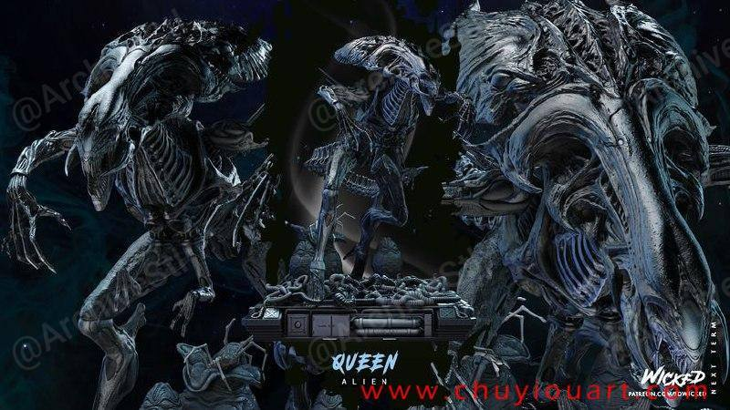
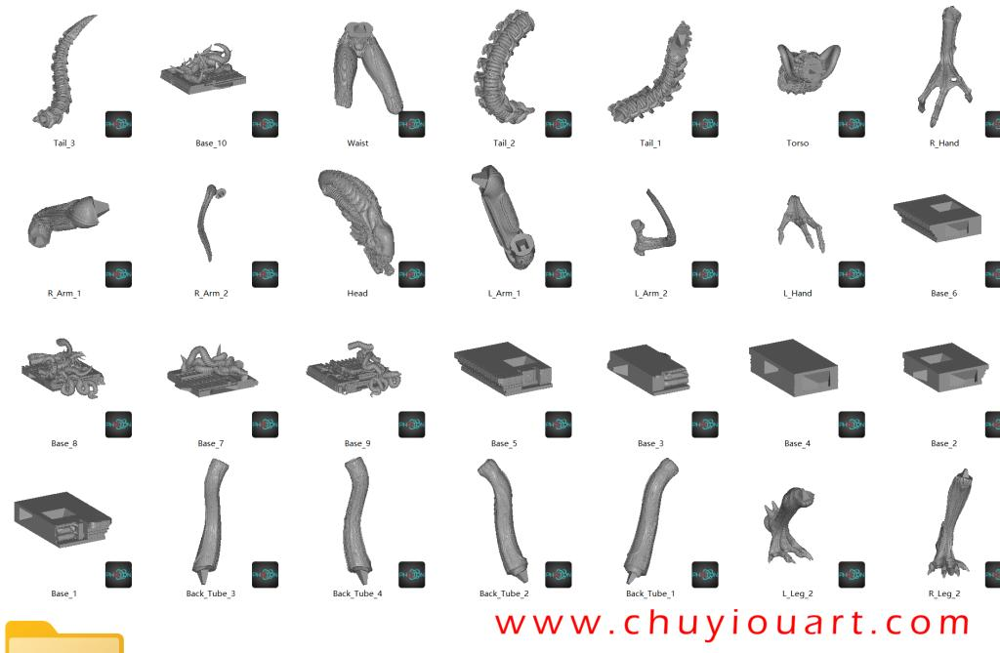

2025年01月03日STl图纸文件分享
提取码
r9ts
今天分享一组异形系列模型，包括异形之母、经典异形造型、异形幼虫、雷普利、主教和纽特的文件。wicked出品，精度还原度都很好，推荐给大家。







https://pan.baidu.com/s/1hp-wYqYRY8AP5NCXNDWMGw 提取码: r9ts
以上内容仅供个人使用（非商用）
ONLY for PERSONAL (NON-COMMERCIAL) use.
加群获得更多免费模型！